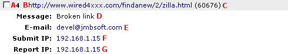

Introduction
With AutoGallery SQL it is possible to place a link next to each of your galleries which your surfers can then use to
report galleries that are no longer working or are breaking your rules. This document will describe how and where to
place that link, and how to process the cheat reports that you receive.
Placing The Link
To use the cheater reporting feature, there needs to be a link next to each gallery on your TGP that points to the report.cgi script.
This can be done by placing the correct code in the HTML option of either a TEMPLATE or GALLERIES directive. For example, say you have
the following TEMPLATE section defined in your TGP page template:
<%TEMPLATE
NAME Text
HTML ##Date## <a href="##Gallery_URL##">##Category## ##Thumbnails## Pics</a><br />
%>
Now, you want to add a cheat reporting link that appears as an x inside parenthesis before the date. To do that you would change the TEMPLATE
directive to look like:
<%TEMPLATE
NAME Text
HTML <a href="##Cheat_URL##">(X)</a> ##Date## <a href="##Gallery_URL##">##Category## ##Thumbnails## Pics</a><br />
%>
Note that all we had to do to add the cheat reporting link was to add <a href="##Cheat_URL##">(X)</a> in the location where we wanted
the link to appear.
Processing Cheat Reports
To process cheat reports click on the Cheat Reports link in the Gallery Control section of the control panel menu. AutoGallery SQL will load a page
where you will be able to see all of the current cheat reports that have been made. Below is an image of what you will see, followed by a description
of each of the marked items.

- This is the ID number assigned to the cheat report
- This is the URL of the gallery that has been reported
- This is the ID number of the gallery that has been reported
- This is the message describing what is wrong with the gallery that has been reported
- This is the e-mail address of the person who submitted the gallery that has been reported
- This is the IP address of the person who submitted the gallery that has been reported
- This is the IP address of the person who submitted the cheat report
Once you have examined the cheat report you will need to decide what you want to do with it. There are three different options.
Remove Report
This will remove the cheat report without doing anything to the gallery that was reported. Use this option if
you decide that the cheat report is incorrect.
Delete Gallery
This will remove the gallery that was reported and the corresponding cheat report.
Delete & Ban Gallery
This will remove the gallery that was reported and the corresponding cheat report. It will also ban the e-mail address, partial gallery URL, and
the IP address of the submitter for the gallery that was reported